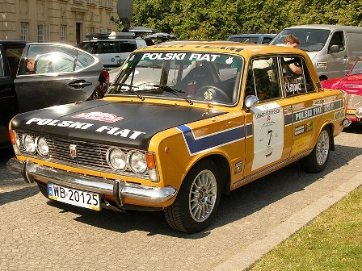
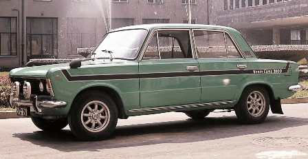
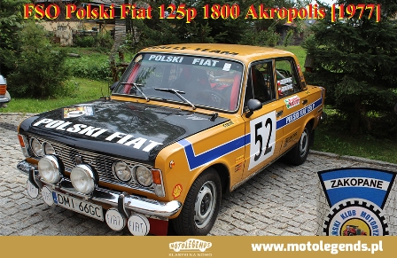

Polski Fiat 125p
W roku 1972 zaprezentowano dwa nowe modele - Monte Carlo oraz Akropolis. Te auta z powodzeniem startowały w wielu rajdach. Nie zapominano także o wyścigach samochodowych. W zakładzie sportu FSO powstała wyczynowa wersja PF 125p oznaczona jako GTI.

Monte Carlo
Polski Fiat 125p

Monte Carlo
Polski Fiat 125p

Akropolis